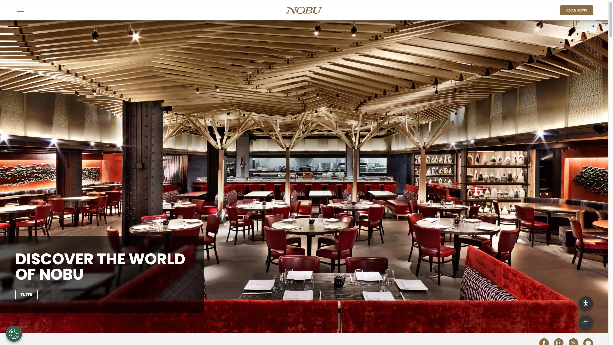
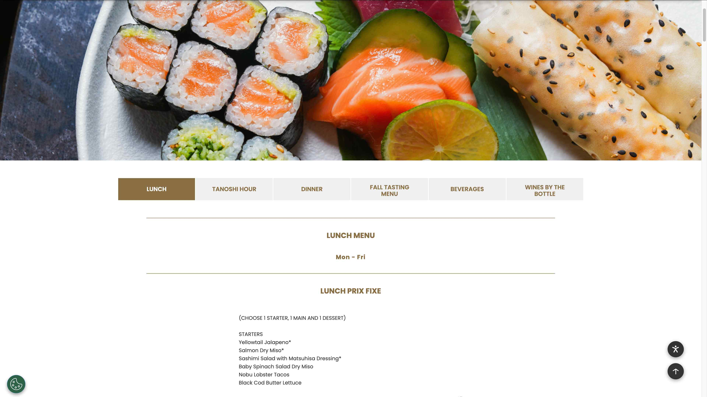
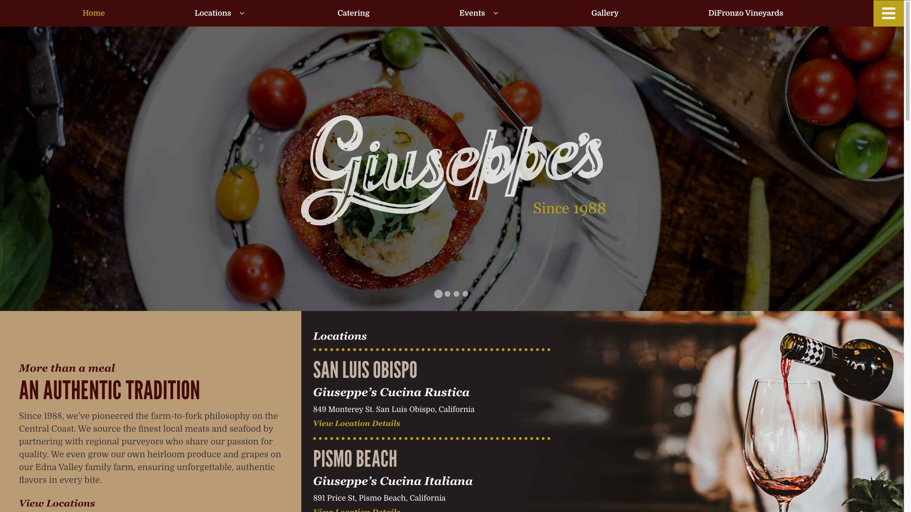
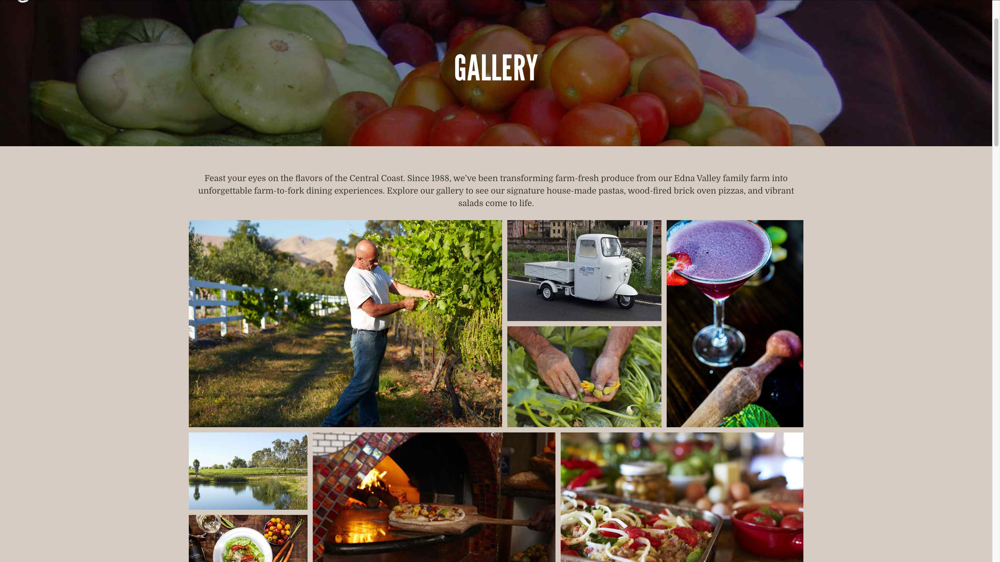
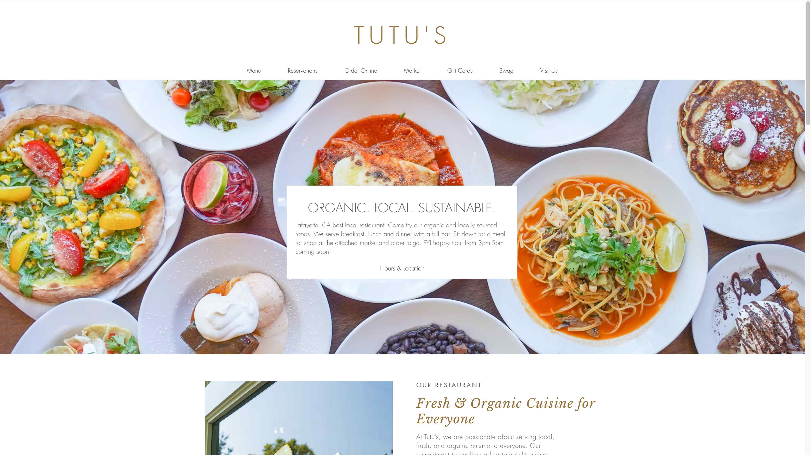
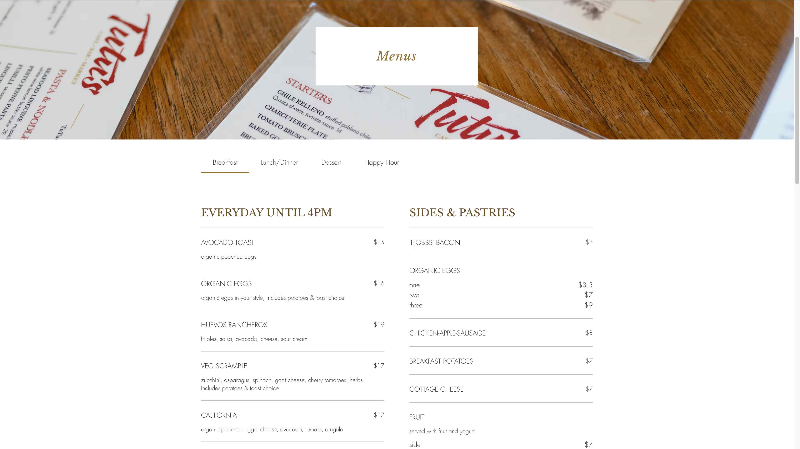

John's Pork
A high end lunch and dinner restaurant that specializes, but is not limited to pork centric dishes. Elegance in taste, presentation, and experience is vital to our establishment's values.
The people who use this website are prospective customers who want to view the menu or try to understand what the vibe of the restaurant is. Older customers specifically are more likely as it is a fine dining establishment.
The primary tasks and goals of the audience are to be able to understand if they want to eat at the restaurant within the first minute or two of being on the restaurant. The presentation and menu heavily influence if they decide to eat there.






Authentic Pork Dishes Since 1967
[Hero Image of Restuarant Interior]
John's Pork has been part of the Seidler family's legacy for the last 60 years. It was founded in 1967 because of John Seidler's pig farm and love to cook and create dishes. The family business has been passed down through generations
[Picture of John's Family]
John's Pork is high end lunch and dinner restaurant that specializes, but is not limited to pork centric dishes. Elegance in taste, presentation, and experience is vital to our establishment's values.
[Cooking in Kitchen Image]
Three pulled pork sliders with Brother Juniper's famous Barbecue Sauce, served with coleslaw on brioche bun
$22.00
Bite sized pork belly cubes glazed with honey and jalapeño slaw
$16.00
Baked potato wrapped in bacon, with cheese, scallion, chive, onion, and bacon bit garnishes
14.00
Uncooked bacon served on sizzling hot coal plate, served with side of breakfast potatoes
$18.00
Thick cut pork chops with crunchy herb exterior, miso glaze drizzle
$34.00
Cherry miso glaze on pan-seared 8oz Pork Tenderloin
$32
Slowed cooked braised porkbelly with candied apple glaze
$30.00
45oz tomahawk steak smoked for 48 hours and soaked in bourbon
$150.00
[Laughing Customers in Dining Room]